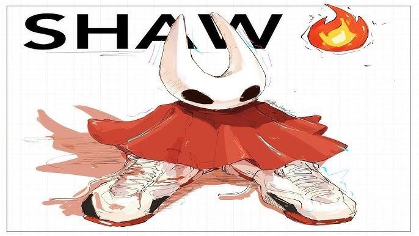

Shaw
September 23, 2025 by Khajeim Daily

Shaw, the embodiment of hornet, the protagonist of hollow knight silksong and the younger sister to the knight and the hollow knight.
The sequel to the well-known and loved game hollow knight, it has been anticipated for several years.
Originally meant to be a simple dlc to the original game silksong ended up being a an entirely new game due to the developes having so much ideas and "having too much fun" as they stated.
Hollow Knight silksong takes place in a new land, Pharloom, a mysterious kingdom filled with lush forests, shimmering caverns and intricate cityscapes Hornet is a symbol of strength and hope for the bugs of pharloom as you climb from the depths of the land to the top where the citadel resides.
The first major hurdle our protagonist faces is Lace, a bug made entirely of silk, her goal is to torment hornet and to stop her from ascending to the top.
With every strike of her needle and every cry of Shaw!, Hornet forges a path through Pharloom, embodying both the struggle and the promise of a kingdom waiting to be reclaimed.
Tailwind CSS
September 23, 2025 by Khajeim Daily

Throughout the years front-end developement has been constantly evolving. Tailwind CSS is one such evidence of this.
It is a utility first CSS framework that transforms the way developers design websites.
It is a solution to developers who want a way to style their applications faster and more consistently without having to use plain css or frameworks such as bootstrap and bulma.
How does it work?
Tailwind is a utility-first framework. What this means is that instead of giving you prebuilt components such as navbars and buttons, it provides small and single-purpose utility classes such being p-4 which adds padding, bg-slate-900 which sets the background color, text-white which changes the text color and rounded-lg which gives rounded corners.
This allows you to style your components directly in your html file without a seperate custom css file.
Developers prefer tailwind due to its faster development, high customizability, responsive design and lack of class naming headaches.